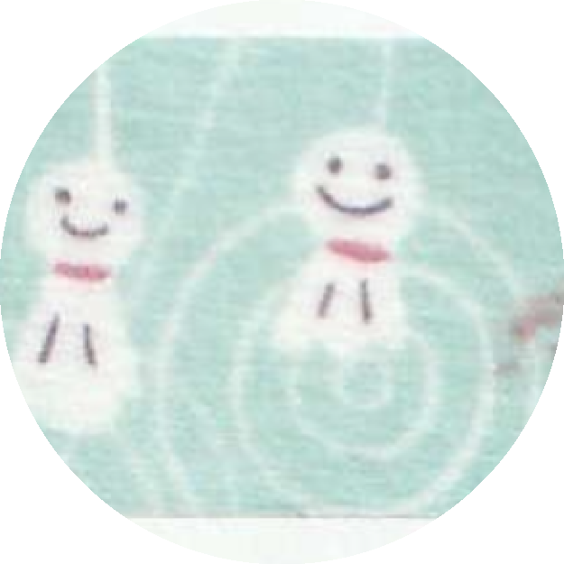

|  | Shinzi Katoh てるてる坊主 15mm Masking Tape 색감이 너무 예쁘고, 테루테루보즈 일러스트도 너무 귀여운 디자인의 마스킹 테이프이다. 장마 시즌에 자주 쓰는 마스킹 테이프인데, 기간 한정이라 더 이상 사지 못한다는 것이 너무 슬프다. |
MT Gray Masking Tape 15mm Set 화려하고 다양한 디자인의 아이템이 아무리 많이 가지고 있더라도 기본템은 언제나 필수라고 생각한다. 채도 빠진 색상을 좋아하는데 5개 세트인 회색 테이프들이 눈에 밟혀서 구매했었다. |
|
SAIEN スイカ＆パイン 15mm Masking Tape 전체적으로 블러 처리 된 것 처럼 몽글몽글한 느낌의 일러스트를 가진 마스킹 테이프이다. 다양한 색상들이 섞여있지만 전혀 촌스럽지 않고 상큼한 느낌이 나서 여름에 자주 사용하는 편이다. |
|
BGM 水彩画 タウン マスキングテープ 20mm : 富士山 제품명 처럼 수채화 질감으로 그려진 후지산 디자인이 너무 매력적인 테이프이다. 벚꽃의 분홍빛과 후지산의 푸른빛이 번지 듯이 표현되어 있는 것이 너무나 매력적인 아이템이라고 생각한다. |
|
ワールドクラフト キラキラ マスキングテープ 15mm: スターダスト 제일 자주 쓰는 테이프이다. 붙였을 때 배경 처럼 잔잔하게 깔아주기 너무 좋은 아이템이고, 평소 별 스티커를 자주 사용해서 전체적인 통일감을 주는 듯한 느낌도 있어 좋아한다. |